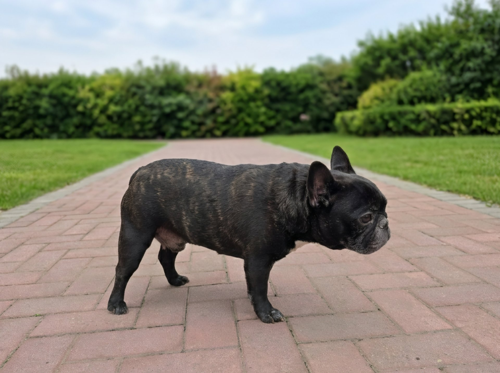

01 / SUPPORT
让终端先能用起来
系统部署与迁移、驱动与外设、硬件兼容性判断。从装机、驱动分发到标准化处置流程，让同样的故障第二次出现时有章可循。
Windows / macOS驱动与固件批量部署
IT SUPPORT / DEVELOPMENT / OPERATIONS
做企业 IT 的日常：让终端能用、让服务稳定。把重复的支持工作做成工具，把工具接进监控，让系统自己报告状态。
$ whoami
jeff — it support / dev / ops
$ ls ~/work
hackintosh/ tools/ monitoring/ drivers/
$ status
[ok] 终端管理 · 软件分发 · 设备监控
[ok] 把重复操作写成脚本，持续中…
$ tail -f /var/log/值班同事
[ok] 夜班与白班同事均在岗 🐾
01 / SUPPORT
系统部署与迁移、驱动与外设、硬件兼容性判断。从装机、驱动分发到标准化处置流程，让同样的故障第二次出现时有章可循。
02 / DEVELOPMENT
软件分发、缓存清理、网络修复、驱动管理——终端支持里的高频操作，逐一收敛成能交给别人跑的 Python / PowerShell 工具。
03 / OPERATIONS
SNMP 读打印机耗材、Zabbix 收终端指标、Webhook 推告警，配好阈值、节假日与免打扰策略，让每条通知都值得看一眼。
HP ZBook Power G10 在 macOS 26 Tahoe 上的完整可用配置记录：每一项硬件当前能不能用、靠什么实现、遇到什么问题、怎么解决的。内屏 eDP 点亮、Intel 无线网卡、触摸板与 CPU 睿频都有对应的排查文档。
阅读项目全记录 → GitHub 仓库 ↗配置速览
OpenCore 引导、内屏 eDP 链路修复、Intel AX211 无线网卡与 I2C 触摸板驱动、CPU 频率表定制。附带 10 个 SSDT、EFI 配置与开机自愈脚本。
客户端 / 服务端架构：自动采集终端资产信息，远程下发 PowerShell、BAT 脚本与安装包，支持配置、注册表与组策略的集中管理。
图形化工具统一管理企业常用软件：自动获取官方下载地址与版本信息，并发下载、进度展示，并与内部 NAS 版本比对提示更新。
基于 HP CMSL / HPIA，按机型与系统版本查询匹配驱动，多线程下载入库，设计 NAS 驱动仓库的全量初始化与增量更新机制。
SNMP 读取 Canon 网络打印机 CMYK 余量，按阈值经企业消息 Webhook 自动告警，支持工作日、节假日与免打扰策略。
可视化扫描企微缓存：按文件、图片、视频、语音分类统计占用，支持按时间与类型清理、预计释放空间与回收站清理。
基于普通摄像头的监控工具：多路预览、移动检测、录像配额与循环覆盖，集成人脸样本训练与白名单识别、邮件告警。
Windows 网络配置修复工具集、员工自助装机平台、音频状态监测、Zabbix 终端指标上报——小工具清单持续补齐。
把现象、日志和已经试过的方法整理出来，比「它坏了」更容易定位。
日常开发的两位四脚同事：一位负责在盯监控时保持耐心，一位负责在每次提交前摇尾巴表示通过。
* 它们不接工单，也不对告警风暴负责。

夜班同事盯监控的时候，比我沉得住气。

白班同事所有上线申请，摇尾巴通过。